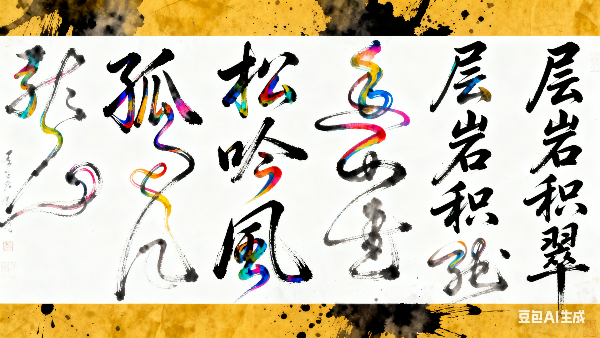

中华传统艺术：流淌千年的文化瑰宝

中华传统艺术是中华民族在漫长历史长河中沉淀下来的文化精髓，它承载着古人的智慧、情感与审美追求，涵盖多个领域，每一种艺术形式都如同一颗璀璨的明珠，在岁月的打磨下愈发闪耀。接下来，我们将从多个维度，详细探寻传统艺术的独特魅力。
绘画艺术：笔墨间的意境之美

中国传统绘画，简称 “国画”，以其独特的笔墨语言和审美情趣，在世界绘画史上独树一帜。它注重 “外师造化，中得心源”，追求神似而非单纯的形似，强调意境的营造。
山水画：作为国画的重要门类，山水画以山川自然景观为描绘对象，讲究 “三远法”（高远、深远、平远），通过笔墨的浓淡、干湿、疏密，展现山河的雄伟壮阔或清幽秀丽。例如，北宋范宽的《溪山行旅图》，画面中巍峨的山峰占据主体，气势磅礴，山间云雾缭绕，近处的树木、人物与骡马点缀其间，营造出一种雄浑、静谧的意境，仿佛让人置身于苍茫的山水之间，感受到大自然的磅礴力量。
花鸟画：以花卉、鸟类、虫鱼、走兽等为描绘对象，注重对动植物形态、神韵的刻画，同时常借物抒情、托物言志。明代徐渭的《墨葡萄图》堪称花鸟画中的经典之作，他以狂放不羁的泼墨手法，描绘出葡萄的鲜活形态，墨色浓淡相宜，葡萄藤的缠绕交错充满动感，画中题诗 “半生落魄已成翁，独立书斋啸晚风。笔底明珠无处卖，闲抛闲掷野藤中”，将自己的身世感慨融入画中，使作品兼具艺术美感与情感深度。
人物画：以人物为核心描绘对象，注重刻画人物的神态、性格与社会风貌。东晋顾恺之的《洛神赋图》，根据曹植的《洛神赋》创作而成，画面生动再现了曹植与洛神相遇、相恋又别离的场景，人物形象优美，神态各异，线条流畅细腻，将浪漫的爱情故事与奇幻的神话色彩完美融合。
书法艺术：线条中的气韵风骨

书法是中国特有的传统艺术，它以汉字为载体，通过点画、结构、章法的变化，展现出独特的艺术魅力，被誉为 “无言的诗，无行的舞，无图的画，无声的乐”。
楷书：楷书笔画规整、结构严谨，给人以端庄、稳重之感。唐代颜真卿的楷书作品《颜勤礼碑》，笔力雄健，字体宽博大气，横细竖粗，撇捺舒展，具有很强的视觉冲击力，其书法风格被称为 “颜体”，对后世书法发展影响深远。颜真卿的书法不仅体现出高超的艺术技巧，更蕴含着他刚正不阿、忠诚爱国的人格魅力。
行书：行书介于楷书和草书之间，兼具楷书的规整与草书的灵动，书写流畅自然，富有变化。东晋王羲之的《兰亭序》被誉为 “天下第一行书”，这幅作品是王羲之在兰亭雅集时即兴创作而成，全文共 28 行，324 字，笔法精妙，结体多变，章法布局疏密有致，浑然天成。文中 “之” 字的写法更是变化多端，无一雷同，展现出王羲之卓越的书法造诣和深厚的文化底蕴。
草书：草书笔画简约、连绵不断，注重情感的表达和气势的展现，给人以奔放、洒脱之感。唐代张旭的草书作品《古诗四帖》，笔走龙蛇，气势磅礴，线条跌宕起伏，充满动感，仿佛将作者内心的激情与豪迈全部倾注于笔端。张旭的草书常常在醉酒后创作，时人称之为 “张颠”，他的书法打破了传统书法的束缚，展现出极强的艺术个性。
戏曲艺术：舞台上的人生百态

中国戏曲是一种综合型的舞台艺术，集文学、音乐、舞蹈、美术、武术、杂技等多种艺术形式于一体，通过演员的表演，讲述一个个生动的故事，反映社会生活，传递文化价值观。中国戏曲剧种繁多，据统计，全国各民族地区的戏曲剧种约有三百六十多种，其中京剧、昆曲、越剧、黄梅戏、评剧被称为 “中国五大戏曲剧种”。
京剧：京剧是中国的 “国粹” 之一，形成于清代乾隆年间，融合了徽剧、汉剧等多种戏曲剧种的精华，具有独特的艺术风格。京剧的角色分为生、旦、净、丑四大行当，每个行当都有其独特的表演程式和艺术特点。如生行中的老生，多扮演中年以上的男性角色，注重唱功和身段的稳重；旦行中的青衣，多扮演端庄、贤淑的女性角色，以唱功为主，表演细腻含蓄。京剧的唱腔优美动听，分为西皮和二黄两大类，板式丰富多样；服装华丽精美，色彩鲜艳，具有很强的装饰性；脸谱更是京剧的一大特色，不同颜色的脸谱代表不同性格的人物，如红色脸谱代表忠勇侠义（关羽），黑色脸谱代表刚正不阿（包拯），白色脸谱代表阴险狡诈（曹操）。经典京剧剧目《霸王别姬》，讲述了西楚霸王项羽与虞姬在垓下之战失败后，虞姬为不拖累项羽而自刎的故事，剧中虞姬的表演细腻动人，项羽的形象豪迈悲壮，通过精彩的唱、念、做、打，将这段悲壮的历史故事展现得淋漓尽致。
昆曲：昆曲被誉为 “百戏之祖”，起源于元末明初的江苏昆山地区，距今已有六百多年的历史。昆曲的唱腔婉转悠扬，旋律优美动听，注重声腔的韵味和情感的表达，其表演程式严谨细腻，舞蹈性强，演员的每一个动作、每一个眼神都富有深意。昆曲的剧本多改编自古代文学名著，如《牡丹亭》《长生殿》《桃花扇》等。《牡丹亭》是明代汤显祖的代表作，讲述了杜丽娘因梦生情，伤情而死，死后魂魄与柳梦梅相恋，最终还魂复生，与柳梦梅终成眷属的故事。剧中 “游园惊梦” 一折，杜丽娘的表演细腻传神，唱腔婉转柔美，将少女怀春的羞涩与对美好爱情的向往展现得惟妙惟肖，成为昆曲中的经典片段。
越剧：越剧起源于浙江嵊州，流行于上海、浙江、江苏等江南地区，以其优美的唱腔、细腻的表演和浪漫的剧情深受观众喜爱。越剧的角色以旦角和小生为主，表演风格柔美、抒情，善于刻画人物的内心世界。越剧的唱腔清丽婉转，富有江南水乡的韵味，经典剧目有《梁山伯与祝英台》《红楼梦》《西厢记》等。《梁山伯与祝英台》讲述了梁山伯与祝英台之间忠贞不渝的爱情故事，剧中 “化蝶” 的结局充满了浪漫色彩，成为家喻户晓的经典桥段。
书法艺术：线条中的气韵风骨
书法是中国特有的传统艺术，它以汉字为载体，通过点画、结构、章法的变化，展现出独特的艺术魅力，被誉为 “无言的诗，无行的舞，无图的画，无声的乐”。
楷书：楷书笔画规整、结构严谨，给人以端庄、稳重之感。唐代颜真卿的楷书作品《颜勤礼碑》，笔力雄健，字体宽博大气，横细竖粗，撇捺舒展，具有很强的视觉冲击力，其书法风格被称为 “颜体”，对后世书法发展影响深远。颜真卿的书法不仅体现出高超的艺术技巧，更蕴含着他刚正不阿、忠诚爱国的人格魅力。
行书：行书介于楷书和草书之间，兼具楷书的规整与草书的灵动，书写流畅自然，富有变化。东晋王羲之的《兰亭序》被誉为 “天下第一行书”，这幅作品是王羲之在兰亭雅集时即兴创作而成，全文共 28 行，324 字，笔法精妙，结体多变，章法布局疏密有致，浑然天成。文中 “之” 字的写法更是变化多端，无一雷同，展现出王羲之卓越的书法造诣和深厚的文化底蕴。
草书：草书笔画简约、连绵不断，注重情感的表达和气势的展现，给人以奔放、洒脱之感。唐代张旭的草书作品《古诗四帖》，笔走龙蛇，气势磅礴，线条跌宕起伏，充满动感，仿佛将作者内心的激情与豪迈全部倾注于笔端。张旭的草书常常在醉酒后创作，时人称之为 “张颠”，他的书法打破了传统书法的束缚，展现出极强的艺术个性。
音乐艺术：旋律中的情感共鸣

中国传统音乐历史悠久，种类繁多，包括宫廷音乐、民间音乐、宗教音乐等，它以独特的乐器和旋律，表达着古人的情感和对生活的感悟。
民族乐器：中国传统民族乐器丰富多彩，根据演奏方式的不同，可分为吹管乐器、拉弦乐器、弹拨乐器和打击乐器四大类。吹管乐器如笛子、箫、唢呐等，笛子音色清脆明亮，善于表现欢快、活泼的情绪，如《喜相逢》；箫音色柔和典雅，富有诗意，如《平湖秋月》。拉弦乐器如二胡、京胡、板胡等，二胡是中国流传最广的拉弦乐器之一，音色圆润柔和，善于表达深沉、细腻的情感，著名的二胡曲《二泉映月》，由民间音乐家阿炳创作，乐曲通过凄凉、哀怨的旋律，展现了阿炳坎坷的一生和对命运的抗争，听来令人动容。弹拨乐器如古琴、古筝、琵琶等，古琴是中国最古老的弹拨乐器之一，被誉为 “琴棋书画” 四艺之首，音色古朴典雅，富有韵味，古琴曲《广陵散》《梅花三弄》等都是传世佳作；琵琶音色清脆明亮，表现力丰富，既能演奏欢快活泼的乐曲，也能演奏悲壮激昂的乐曲，如《十面埋伏》，通过琵琶的演奏，生动再现了楚汉相争时垓下之战的紧张激烈场面。打击乐器如鼓、锣、钹等，在传统音乐中起着烘托气氛、节奏控制的作用。
传统乐曲：中国传统乐曲题材广泛，风格多样，有的描绘自然景观，有的讲述历史故事，有的表达情感诉求。除了上述提到的《二泉映月》《十面埋伏》外，还有《高山流水》，传说俞伯牙鼓琴，钟子期能听出他所弹的是 “巍巍乎若泰山”“洋洋乎若江河”，两人遂成知音，这首乐曲也成为友谊的象征；《春江花月夜》则以优美的旋律，描绘了春天夜晚春江花月的迷人景色，营造出一种宁静、祥和的意境。
越剧：越剧起源于浙江嵊州，流行于上海、浙江、江苏等江南地区，以其优美的唱腔、细腻的表演和浪漫的剧情深受观众喜爱。越剧的角色以旦角和小生为主，表演风格柔美、抒情，善于刻画人物的内心世界。越剧的唱腔清丽婉转，富有江南水乡的韵味，经典剧目有《梁山伯与祝英台》《红楼梦》《西厢记》等。《梁山伯与祝英台》讲述了梁山伯与祝英台之间忠贞不渝的爱情故事，剧中 “化蝶” 的结局充满了浪漫色彩，成为家喻户晓的经典桥段。